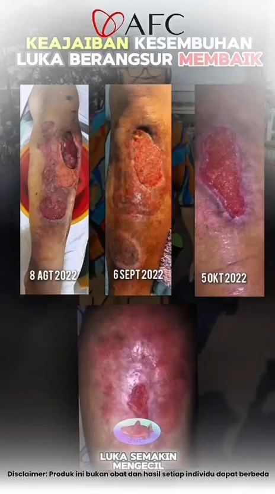
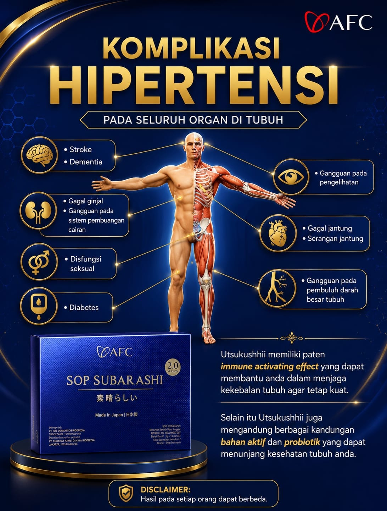
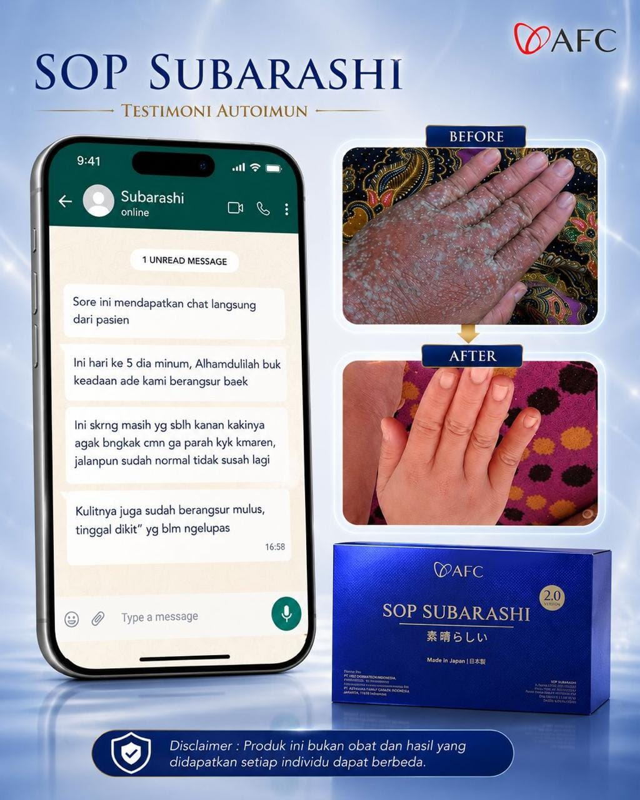
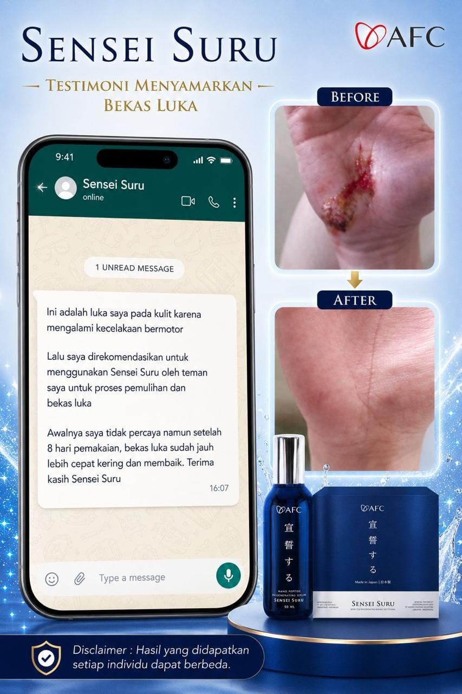
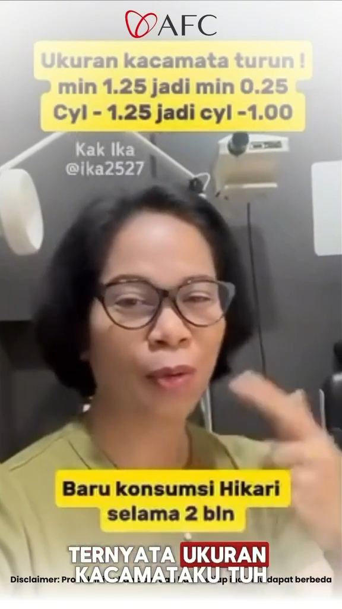
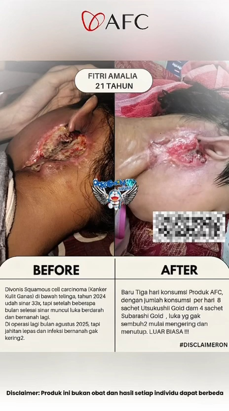

№ 01 · Regenerasi Luka Kronis
“Luka yang tak kunjung sembuh, akhirnya menutup.”
Dokumentasi 3 bulan (Agustus – Oktober 2022). Luka besar di kaki secara bertahap mengering & mengecil setelah rutin konsumsi SOP Subarashi.
Setiap hari kami bekerja untuk mengembangkan bisnis yang bertanggung jawab dan berkelanjutan — yang meningkatkan kualitas hidup dan memberi manfaat bagi masyarakat. Dampak kami dimulai dari tujuan utama: menghadirkan produk fungsional dari Jepang yang membantu manusia hidup lebih sehat, lebih panjang, dan lebih bermakna.
Menyediakan suplemen fungsional bersertifikat internasional (BPOM, MUI, FDA, MIMS) untuk keluarga di seluruh Indonesia — bukan hanya di kota besar.
Semua produk AFC dibuat dari bahan organik alami — peptida ikan salmon, kombu, marigold, spearmint — diproses dengan standar farmasi Jepang.
Bersama konsultan tersertifikasi, kami mendampingi ribuan pasien pasca-stroke, diabetes, hepatitis, dan tumbuh kembang anak — dengan gratis konsultasi seumur hidup.
Kami mengutamakan keaslian produk & respon cepat. Setiap pesanan bergaransi 100% original dari Jepang — bukan barang marketplace tanpa jaminan.
Distributor resmi — bukan reseller anonim. Semua transaksi transparan, harga tetap, dan sesuai standar BPOM RI serta kode etik farmasi.
Bukti dampak kesehatan yang dilaporkan langsung oleh pengguna AFC.
Disclaimer: hasil dapat berbeda pada setiap individu — bukan pengganti anjuran dokter.

Dokumentasi 3 bulan (Agustus – Oktober 2022). Luka besar di kaki secara bertahap mengering & mengecil setelah rutin konsumsi SOP Subarashi.

Utsukushhii membantu tubuh mempertahankan kesehatan optimal — mendukung ginjal, jantung, otak, dan pembuluh darah dari efek hipertensi.

Chat langsung dari pasien autoimun. Setelah 5 hari konsumsi SOP Subarashi, kondisi kaki dan kulit tangan mulai membaik signifikan.

Luka pasca kecelakaan motor. Menggunakan Sensei Suru serum nano peptide dua kali sehari, kulit mulai pulih & bekas luka memudar.

Kak Ika (@ika2527) melaporkan penurunan ukuran kacamata setelah konsumsi rutin Hikari — didukung marigold peptide 400 dalton.

Fitri Amalia (21) — pasca sinar 33x tahun 2024. Dengan protokol 8 sachet Utsukushhii + 4 sachet Subarashi per hari, luka membaik luar biasa.
Disclaimer: Produk AFC adalah suplemen fungsional, bukan obat. Hasil yang didapatkan setiap individu dapat berbeda. Selalu konsultasikan kondisi kesehatan Anda dengan dokter atau konsultan tersertifikasi kami sebelum memulai penggunaan.
Konsultasi gratis dengan konsultan resmi kami — kami akan bantu merekomendasikan protokol yang tepat sesuai kondisi Anda.
Chat konsultan resmi →